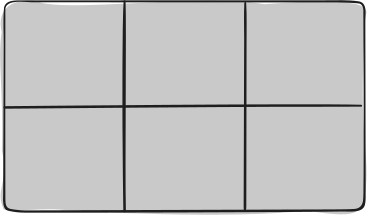
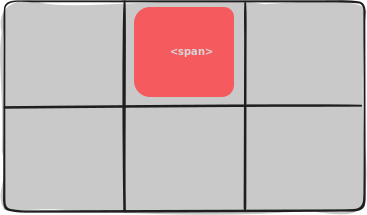
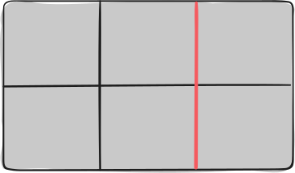
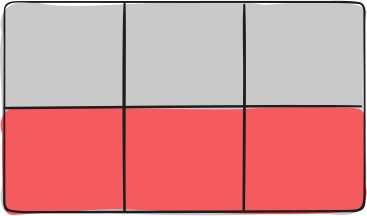
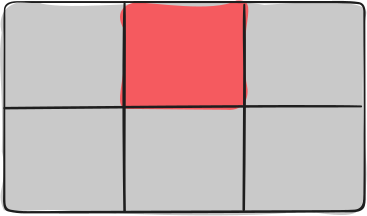
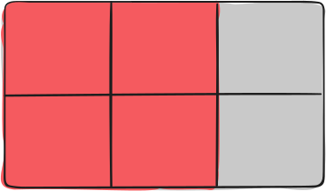
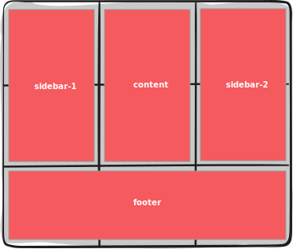

# Let's get down to the nitty griddy 🧐
## $ whoami_ Andreas Kottre co-founder & dev bei [@typedigital_](twitter.com/typedigital_) - Twitter: [@timidak_](twitter.com/timidak_) - GitHub: [@timidak](github.com/timidak)
## CSS Grid Layout! Aber was war davor?
### Was war davor? - Tabellen - floats - positioning - inline-block - flexbox
## Was ist CSS Grid Layout a.k.a. Grid? 🤓
### Was ist CSS Grid Layout a.k.a. Grid? 🤓 - zweidimensionales rasterbasiertes Layoutsystem - die Antwort auf die Layoutprobleme der letzten Jahrzehnte?
### Browser-Support <img src="Bildschirmfoto 2019-09-26 um 20.16.48.png" /> _(siehe [caniuse](http://caniuse.com/#feat=css-grid))_
## Terminologie
### Grid Container VS Grid Item  
### Grid Line 
### Grid Track 
### Grid Cell 
### Grid Area 
## Grundlagen von Grid Containern
### Grid Container definieren ```css .container { display: grid | inline-grid; } ```
### Template Spalten definieren ```css .container { display: grid; grid-template-columns: <track-size> } ```
### Template Spalten definieren (diesmal mit Einheiten 😅) ```css .container { display: grid; grid-template-columns: 500px 30% 1fr 2fr; } ```
### Was sind fr? ```css .container { display: grid; grid-template-columns: 500px 3fr 1fr 2fr; } ```
### Ein Beispiel-Grid ```css .container { display: grid; grid-template-columns: 3fr 1fr 2fr; grid-template-rows: 500px auto; grid-auto-flow: row; /* ~ flex-direction in flexbox */ grid-auto-row: 200px; grid-gap: 20px; } ```
### repeat() für's Definieren von Spalten ```css .container { display: grid; grid-template-columns: repeat(2, 3fr 1fr 2fr); grid-template-rows: repeat(4, 1fr); } ```
## Grundlagen von Grid Items
### Grid Item Sizing ```css #item-1 { grid-column: span 2; grid-row: span 2; } ```
### Grid Items platzieren und dimensionieren ```css .item { grid-column-start: <number> | <name> | auto; grid-column-end: <number> | <name> | auto; grid-row-start: <number> | <name> | auto; grid-row-end: <number> | <name> | auto; } ```
### Grid Items platzieren und dimensionieren ```css #tada { grid-column-start: 2; grid-column-end: auto; } #lala { grid-column-start: 2; grid-column-end: 5; } /* und in kurz */ #haha { grid-column: 2 / 5; } ```
### Grid Items platzieren und dimensionieren ```css #lala { grid-column: 2 / span 5; /* startet bei 2 und ist 5 Zellen weit */ } /* wie man ein Grid Item über die das ganze Grid legt? */ #biggie { grid-column: 1 / -1; /* oder */ grid-row: 1 / -1; } ```
## Grundlagen von Grid Areas
### Benamen von Grid Areas ```css .container { display: grid; grid-template-rows: 300px 300px 300px; grid-template-columns: 1fr 1fr 1fr; grid-template-areas: "sidebar-1 content sidebar-2" "sidebar-1 content sidebar-2" "footer footer footer"; } ```
### Und das Ergebnis 
### Und jetzt Items in die Grid Areas! ```css .footer { grid-area: footer; } .item1 { grid-area: sidebar-1; } .item2 { grid-area: sidebar-2; } .item3 { grid-area: content; } ```
### Andere Anordnung auf Mobile? Kein Problem! ```css @media (max-width: 700px) { .container { grid-template-areas: "sidebar-1 sidebar-1 sidebar-2" "content content content" "footer footer footer" } } ```
## Zentrieren mit Grid
### Elemente eines Grid Containers zentrieren ```css .container { align-content: center; justify-content: center; } ``` oder ```css .container { place-content: center; } ```
### Ein einzelnes Grid Item zentrieren ```css #item-1 { align-self: center; justify-self: center; } ``` oder ```css #item-1 { place-self: center; } ```
- Agentur spezialisiert auf Web- und Mobile-Projekte - Immer auf der Suche nach neuen Herausforderungen - kleines Team von 5 Leuten mit Büro im Kreis Augsburg